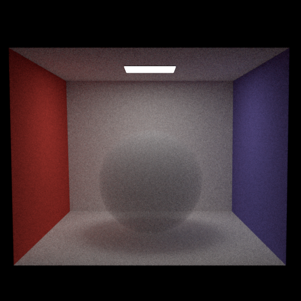
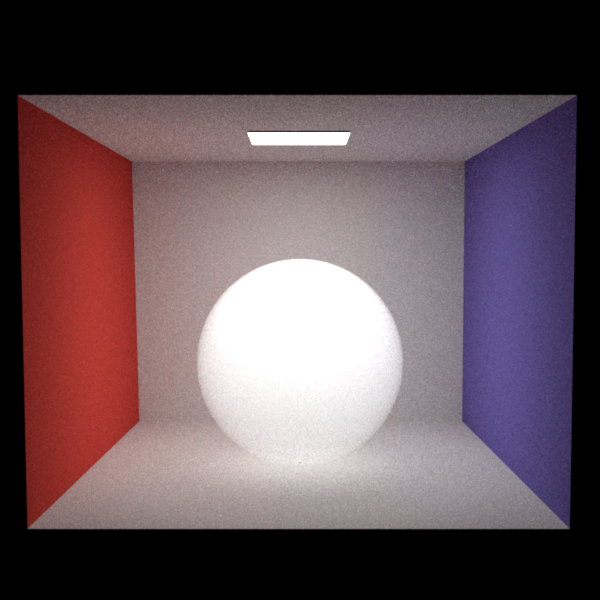
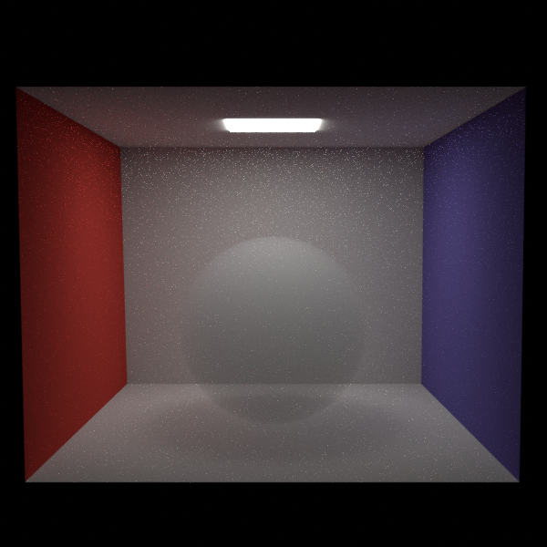

Media
For this feature I added a medium base class, which can be attached to a shape and has a phase function. The medium allows for sampling of the free path length and the transmittance per color channel (the free path pdf). I started with the simpler homogeneous medium and isotropic phase. We can sample the free path length and its pdf (transmittance) from a medium by using the analytic formulas from the slides. The transmittance supports colors and the free path chooses a uniformly random color channel to sample from.The heterogeneous medium uses delta tracking to step along the ray using the maximum density. The delta tracking is used to sample a collision point and to determine the transmittance of the ray.
For the heterogeneous volume density sampling I used the NanoVDB datastructure. This allows me to use the bake fluid/smoke simulation directly from blender. As blender exports .vdb files, there is a conversion done to .nvdb files. This effectively creates the .nvdb file as a cache, so we can easily update the vdb file from blender. The vdb volume is like a texture that we can evaluate it at a certain coordinate. There is a density and a temperature channel (for emissive media). The NanoVDB sampler allows for setting an interpolation order, which improves the visual fidelity.
The maximum density for delta tracking can be easily calculated pre-render-time from the NanoVDB grid. In the delta tracking process, a complicated part was to convert the rays into the local index space of the NanoVDB grid.
Currently, the sampling of the NanoVDB grid causes a segmentation fault as the accessor for the sampler is invalidated.
Integrators
Now that the we have media to query, I implemented the integrators. First the path_vol_mats integrator starting with the the path_mats as a basis. The first difference is that we store the current medium and factor in transmittance to the throughput when propagating the ray.When a ray enters a shape the active medium is updated in the integrator. When it leaves the medium the scene medium replaces it. The scene medium is a vacuum medium by default, with infinite free path. However, an arbitrary medium can be attached to the scene. There are some limitations to scene media. They cannot have an emitter and rays that miss the scene currently use the environment map (technically this should be black or equal to the accumulated emission).
The second difference is that we need to handle medium interactions when the samples free path length is shorter than the distance to the next surface interaction. In this case we sample the medium phase function and adjust the ray direction.
As a shape can now have one of or both a bsdf and an medium, we need to handle medium interfaces without a surface differently. Notably shadowrays should not be occluded by medium-only interfaces in path_vol_mis and the ray direction should stay constant.
The path_vol_mats integrator is quite straightforward without emissive media in my opinion and fits in about 100 lines of verbose code.
MIS Integrator
To importance sample the media, I implemented the path_vol_mis which is based on the path_mis and path_vol_mats. This additionally samples a random emitter and casts a shadow ray, which propagates through media. The `Li` function is quite similar to the path_vol_mats. We only have the additional weighting of the Li contribution when hitting an emitter and the call to the sampleEmitter function. An emitter is sampled both when hitting a surface and when in a medium interaction.In `sampleEmitter`, we perform similar steps to the path_mis except that the shadowray propagating is offloaded to another function. We need to account for the shadowray transmittance as well as querying the correct interaction (bsdf or phase pdf) when calculating the weight.
In the `traceShadowray`, we iteratively propagate the ray and accumulate the transmittance whilst updating the current shadowray medium. This is relatively straightforward when viewed in isolation. However, it appears that this part, or the use of its results, is not fully correct, see below.
Misc
The vdb structure is a child object of the heterogeneous media and contains a density and temperature grid. I used the NanoVDB viewer as a reference.Cbox without volumes - Comparison to pa4 path integrators


The integrators correctly handle the scenes without media.
Cbox homogeneous volume - scenes/project/volume/cbox_val_{mats,mis}.xml



Isotropic phase, unit density. MIS media is too birght and shadow is not visible hinting at a weighting issue and problem in the transmittance of `PathVolMISIntegrator::traceShadowray`.
Implemented in:
- include/nori/medium.h
- src/media/medium.cpp
- src/media/vacuum.cpp
- src/media/homogeneous.cpp
- src/media/heterogeneous.cpp
- src/integrators/path_vol_mats.cpp
- src/integrators/path_vol_mis.cpp
- include/nori/NvdbVolume.h
- src/textures/NvdbVolume.cpp
- src/textures/NvdbVolume.vdb.cpp